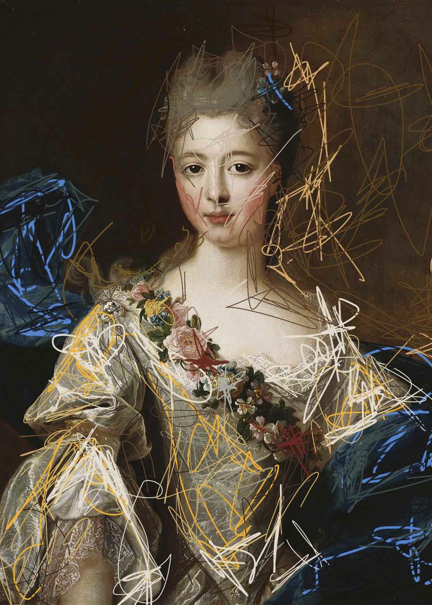
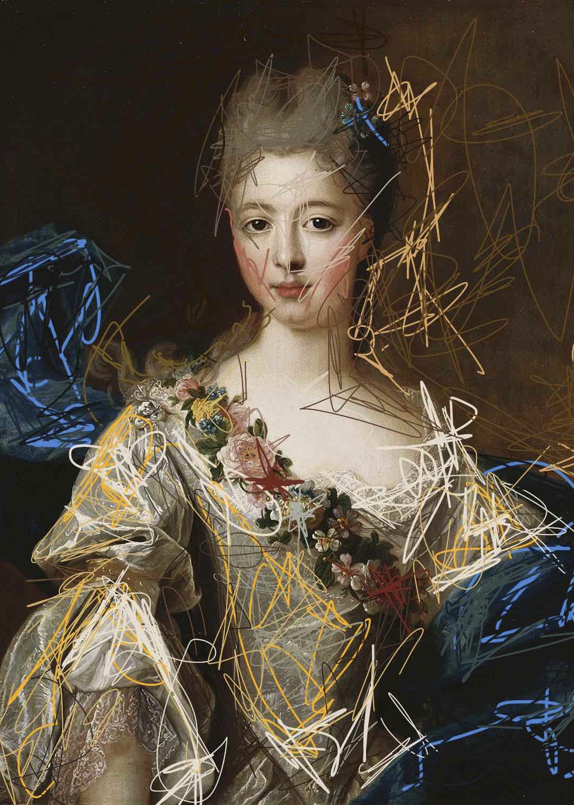
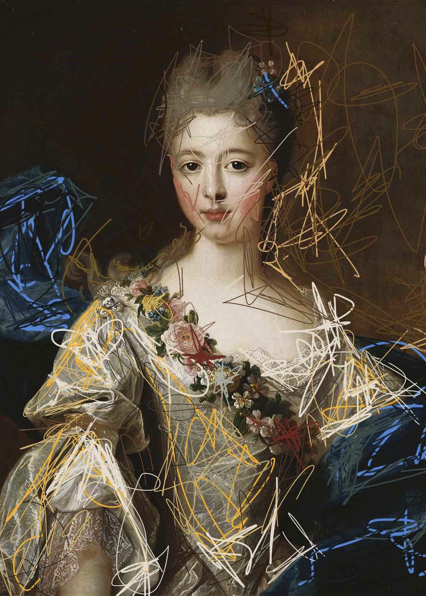

My grad project in college.
I was very interested in the unique skill-set that oil painters had in the 16 and 17 hundreds.
I used my fingers to create intricate lines celebrating the colors and details of these paintings.
Often creating a halo like effect around the women in these images.
